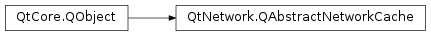

QAbstractNetworkCache¶
Inherited by: QNetworkDiskCache
Detailed Description¶
The
PySide2.QtNetwork.QAbstractNetworkCacheclass provides the interface for cache implementations.
PySide2.QtNetwork.QAbstractNetworkCacheis the base class for every standard cache that is used byPySide2.QtNetwork.QNetworkAccessManager.PySide2.QtNetwork.QAbstractNetworkCacheis an abstract class and cannot be instantiated.See also
-
class
PySide2.QtNetwork.QAbstractNetworkCache([parent=nullptr])¶ Parameters: parent – PySide2.QtCore.QObjectConstructs an abstract network cache with the given
parent.
-
PySide2.QtNetwork.QAbstractNetworkCache.cacheSize()¶ Return type: PySide2.QtCore.qint64Returns the current size taken up by the cache. Depending upon the cache implementation this might be disk or memory size.
In the base class this is a pure virtual function.
-
PySide2.QtNetwork.QAbstractNetworkCache.clear()¶ Removes all items from the cache. Unless there was failures clearing the cache
PySide2.QtNetwork.QAbstractNetworkCache.cacheSize()should return 0 after a call to clear.In the base class this is a pure virtual function.
-
PySide2.QtNetwork.QAbstractNetworkCache.data(url)¶ Parameters: url – PySide2.QtCore.QUrlReturn type: PySide2.QtCore.QIODeviceReturns the data associated with
url.It is up to the application that requests the data to delete the
PySide2.QtCore.QIODevicewhen done with it.If there is no cache for
url, the url is invalid, or if there is an internal cache error 0 is returned.In the base class this is a pure virtual function.
-
PySide2.QtNetwork.QAbstractNetworkCache.insert(device)¶ Parameters: device – PySide2.QtCore.QIODeviceInserts the data in
deviceand the prepared meta data into the cache. After this function is called the data and meta data should be retrievable usingPySide2.QtNetwork.QAbstractNetworkCache.data()andPySide2.QtNetwork.QAbstractNetworkCache.metaData().To cancel a prepared inserted call
PySide2.QtNetwork.QAbstractNetworkCache.remove()on the metadata’s url.In the base class this is a pure virtual function.
-
PySide2.QtNetwork.QAbstractNetworkCache.metaData(url)¶ Parameters: url – PySide2.QtCore.QUrlReturn type: PySide2.QtNetwork.QNetworkCacheMetaDataReturns the meta data for the url
url.If the url is valid and the cache contains the data for url, a valid
PySide2.QtNetwork.QNetworkCacheMetaDatais returned.In the base class this is a pure virtual function.
-
PySide2.QtNetwork.QAbstractNetworkCache.prepare(metaData)¶ Parameters: metaData – PySide2.QtNetwork.QNetworkCacheMetaDataReturn type: PySide2.QtCore.QIODeviceReturns the device that should be populated with the data for the cache item
metaData. When all of the data has been writtenPySide2.QtNetwork.QAbstractNetworkCache.insert()should be called. IfPySide2.QtNetwork.QAbstractNetworkCache.metaData()is invalid or the url in the metadata is invalid 0 is returned.The cache owns the device and will take care of deleting it when it is inserted or removed.
To cancel a prepared inserted call
PySide2.QtNetwork.QAbstractNetworkCache.remove()on the metadata’s url.In the base class this is a pure virtual function.
-
PySide2.QtNetwork.QAbstractNetworkCache.remove(url)¶ Parameters: url – PySide2.QtCore.QUrlReturn type: PySide2.QtCore.boolRemoves the cache entry for
url, returning true if success otherwise false.In the base class this is a pure virtual function.
-
PySide2.QtNetwork.QAbstractNetworkCache.updateMetaData(metaData)¶ Parameters: metaData – PySide2.QtNetwork.QNetworkCacheMetaDataUpdates the cache meta date for the
PySide2.QtNetwork.QAbstractNetworkCache.metaData()‘s url tometaDataIf the cache does not contains a cache item for the url then no action is taken.
In the base class this is a pure virtual function.
© 2018 The Qt Company Ltd. Documentation contributions included herein are the copyrights of their respective owners. The documentation provided herein is licensed under the terms of the GNU Free Documentation License version 1.3 as published by the Free Software Foundation. Qt and respective logos are trademarks of The Qt Company Ltd. in Finland and/or other countries worldwide. All other trademarks are property of their respective owners.